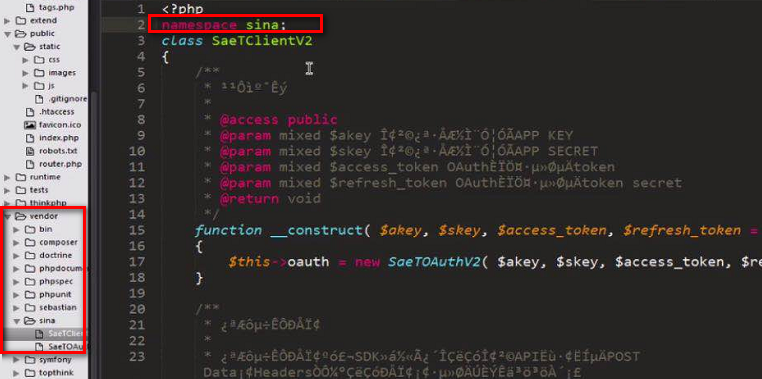
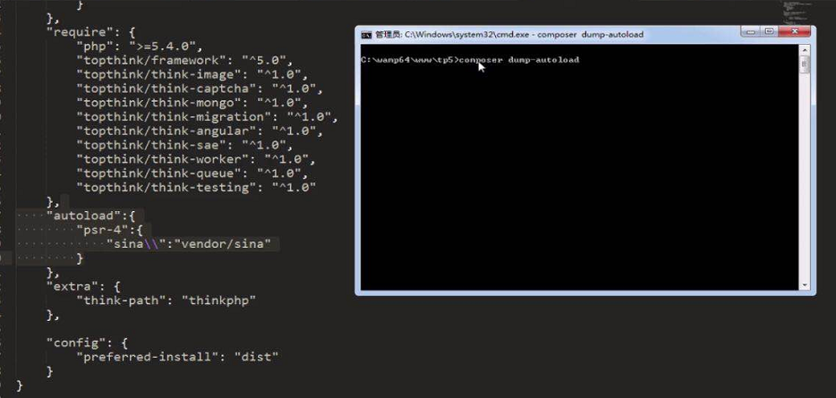

1、首先下载需要的第三方类库，放在TP框架下的vendor文件夹下
2、给第三方类库SDK写上命名空间，命名空间为该类库的文件夹对应的名字

3、在composer.json文件中添加需要加载的第三方类库
"autoload": {
"psr-4": {
"sina\\": "vendor/sina"
}
},
4、打开cmd，进入到项目根目录，使用composer命令加载第三方类库，执行composer dump-autoload，如下，成功即可

5、使用
在使用的地方直接用use引用需要的第三方类库即可。
要使用第3条中的 "sina\\": "vendor/sina" （sina为命名空间，vendor/sina 为对应的文件位置），和 第4条中的命令才可以使用use引入，否则只能使用vendor()方法引入